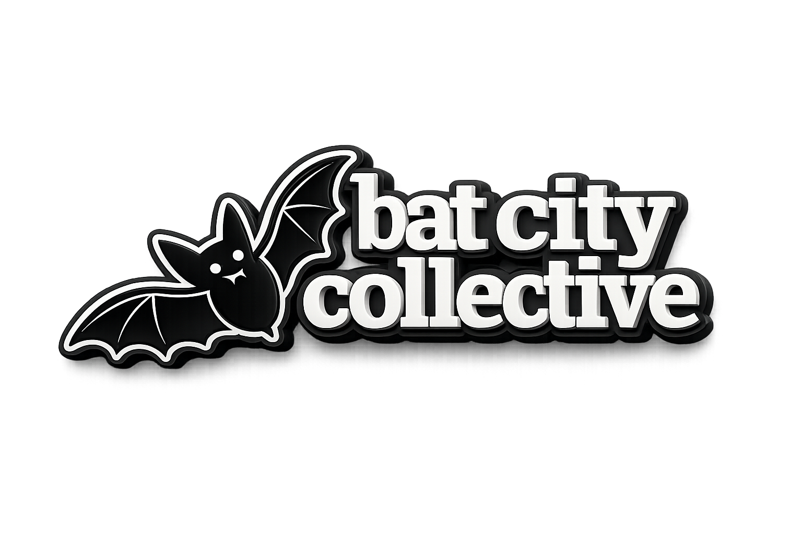

|
LAB
2.2
|
Texas Has Other Plans
|
 |
This is an ENHANCE week. You'll copy your Lab 2.1 code and add powerful new features: your own reusable function library, D20-based travel, a Destination Gate coin flip, and random hazard encounters. By the end, your road trip will be unpredictable, exciting, and uniquely yours.
Submit two files this week: function_library.py (your reusable module) and lab-2-2.py (your main game).
CodeGrade tests your functions in isolation, so both files must be present in your submission.
- Create
function_library.pywith three reusable functions:flip_coin(),roll_d20(), andcheck_percentage() - Import and use your own module in
lab-2-2.py - Implement the Destination Gate — a coin flip that decides if Texas lets you go where you want
- Replace fixed 50-mile travel with D20 rolls (roll × 10 = miles per turn)
- Add hazard encounters with a 30% chance per turn
Chapter 5 Sections: 5.5 (Parameters), 5.8 (Return Values), 5.9 (Modules & Random)
Starting Out with Python, 6th Edition by Tony Gaddis — Chapter 5: Functions
- Your
function_library.pyMUST contain three functions:flip_coin(),roll_d20(), andcheck_percentage() - Your
lab-2-2.pyMUST import and use yourfunction_librarymodule - Your program MUST implement the Destination Gate using
flip_coin() - Your program MUST use D20 rolls for travel distance instead of fixed 50 miles
- Your program MUST implement hazard encounters with 30% chance per turn
Keep both files — Lab 2.3 copies both and adds input validation functions to your library. Your toolkit keeps growing!
| Checkpoint | Time | Task |
|---|---|---|
| CP1: Create Library | 15 min | New file with flip_coin() |
| CP2: Complete Library | 10 min | Add roll_d20() and check_percentage() |
| CP3: Prepare Main Game | 10 min | Copy 2.1, add imports and constants |
| CP4: Destination Gate | 15 min | Coin flip decides your destination |
| CP5: D20 Travel | 15 min | Replace fixed 50 miles with dice rolls |
| CP6: Hazard Encounters | 20 min | Random events with coin flip outcomes |
| Total Estimated Time | 60–90 Minutes | |
Work in two coding sessions if needed. Checkpoints 1–3 create your library and set up the game. Checkpoints 4–6 add the fun mechanics. Each session is about 35–45 minutes.
Here's how your finished program fits together. You're starting from Lab 2.1 — the [NEW] and [REPLACED] tags show what changes this week.
# ---- function_library.py (NEW FILE) ---- import random def flip_coin(): returns 'HEADS' or 'TAILS' [NEW-CP1] def roll_d20(): returns int 1-20 [NEW-CP2] def check_percentage(chance): returns True/False [NEW-CP2] # ---- lab-2-2.py ---- import random import function_library [NEW-CP3] # CONSTANTS SAT_TO_CORPUS = 150 SAT_TO_HOUSTON = 200 SAT_TO_AUSTIN = 80 MILES_MULTIPLIER = 10 [NEW-CP3] HAZARD_CHANCE = 30 [NEW-CP3] def main(): │ │── Welcome banner, player name │── 3-choice menu → set destination, distance │ │── DESTINATION GATE: [NEW-CP4] │ flip = function_library.flip_coin() │ if HEADS: keep destination │ else: redirect to random other destination │ │── distance_remaining, total_miles, turn = ... │── total_hazards = 0, total_escaped = 0 [NEW-CP6] │ │ TRAVEL LOOP: │ while distance_remaining > 0: │ │── roll = function_library.roll_d20() [NEW-CP5] │ │── miles_this_turn = roll * MILES_MULTIPLIER [REPLACED-CP5] │ │── Display turn, roll, miles │ │── Update distance_remaining, total_miles, turn │ │── HAZARD CHECK: [NEW-CP6] │ │ if function_library.check_percentage(HAZARD_CHANCE): │ │ pick random hazard 1-8 │ │ flip coin for outcome │ │ update hazard counters │ │── Arrival + TRIP SUMMARY (with hazard stats) [REPLACED-CP6] if __name__ == '__main__': main()
A brand new file called function_library.py containing your first custom function: flip_coin(). This module will grow throughout the semester — you're building your own developer toolkit!
Real developers don't write the same code over and over. They create reusable modules they can import into any project. When you type import function_library, you're doing exactly what professionals do with import random or import math.
- Create a new file named exactly
function_library.pyin the same folder as your main game - Add a module docstring at the very top with your name, a description like "Bat City Collective — Your Personal Developer Toolkit"
- Add
import randomafter the docstring - Define a function called
flip_coin()with no parameters and a docstring explaining what it returns - Inside
flip_coin(): userandom.randint(0, 1)to get 0 or 1, then use if/else to return the string'HEADS'for 1 or'TAILS'for 0
-
Program 5-21
—
dice.py— You used random.randint(MIN, MAX) to simulate dice. Same pattern here — but return a string instead of printing. -
Program 5-24
—
sale_price.py— Shows how functions return values using the return statement. Your flip_coin() uses the same pattern.
Add this temporary test code at the bottom of function_library.py:
# DEBUG - Delete after testing print('Testing flip_coin():') for i in range(10): print(f' Flip {i + 1}: {flip_coin()}')
Run function_library.py directly. Your results will vary (it's random!), but you should see a mix of HEADS and TAILS:
Testing flip_coin(): Flip 1: HEADS Flip 2: TAILS Flip 3: HEADS Flip 4: HEADS Flip 5: TAILS Flip 6: TAILS Flip 7: HEADS Flip 8: TAILS Flip 9: HEADS Flip 10: TAILS
Delete the test code before moving to Checkpoint 2.
| Mistake | Why It Fails |
|---|---|
| Putting import random inside the function | Works but inefficient — imports should be at the top of the file |
| Using print() instead of return | print() shows output but doesn't give the value back to calling code |
| Forgetting the colon after def flip_coin() | SyntaxError — function definitions need that colon! |
function_library.pywith docstring, import, andflip_coin()- Function returns 'HEADS' or 'TAILS' randomly
- Test code deleted
Two more functions: roll_d20() simulates a 20-sided die, and check_percentage(chance) determines if random events happen.
- In
function_library.py, defineroll_d20()with no parameters and a docstring saying it returns an integer from 1 to 20 - Have it return
random.randint(1, 20) - Define
check_percentage(chance)with one parameter calledchanceand a docstring explaining the parameter and return value - Inside: roll
random.randint(1, 100)and returnTrueif the roll is less than or equal tochance, otherwiseFalse
-
Program 5-7
—
cups_to_ounces.py— Shows how to pass data into a function using parameters. Your check_percentage(chance) uses the same pattern — chance is a parameter just like cups was.
Add this temporary test code at the bottom of function_library.py:
# DEBUG - Delete after testing print('Testing roll_d20():') for i in range(5): print(f' Roll {i + 1}: {roll_d20()}') print('Testing check_percentage(30):') hits = 0 for i in range(20): if check_percentage(30): hits = hits + 1 print(f' 30% triggered {hits} times out of 20')
Run and verify D20 rolls are 1–20, and 30% hits roughly 4–8 times out of 20:
Testing roll_d20(): Roll 1: 14 Roll 2: 3 Roll 3: 19 Roll 4: 7 Roll 5: 11 Testing check_percentage(30): 30% triggered 5 times out of 20
Delete all test code before moving to Checkpoint 3.
| Mistake | Why It Fails |
|---|---|
| Using randint(0, 20) for D20 | D20 rolls are 1–20, not 0–20 — use randint(1, 20) |
| Comparing roll to chance with < instead of <= | 30% chance means roll 1–30 hits, which needs <= 30 |
| Missing docstrings on functions | Functions need docstrings explaining what they do and return |
function_library.pywith three working functions, each with a docstringflip_coin()returns 'HEADS' or 'TAILS'roll_d20()returns integer 1–20check_percentage(chance)returns True or False
Your lab-2-2.py file with updated imports, docstring, and new constants. The game should still work exactly like 2.1 after this checkpoint.
- Copy your
lab-2-1.pyfile and rename itlab-2-2.py - Update the docstring: change title to "Lab 2.2: Texas Has Other Plans" and update the description
- Add
import randomat the top (after docstring) - Add
import function_libraryright after — this imports YOUR module! - In your constants section, add:
MILES_MULTIPLIER = 10 - Add another constant:
HAZARD_CHANCE = 30
-
Program 5-28
—
hypotenuse.py— You imported the math module. Same pattern: import function_library. Then call functions with function_library.flip_coin().

Add this debug code right after your constants in main():
# DEBUG - Delete after testing print('Testing imports...') print(f'Coin flip: {function_library.flip_coin()}') print(f'D20 roll: {function_library.roll_d20()}') print()
Run lab-2-2.py — you should see the test output, then the game runs normally:
Testing imports... Coin flip: HEADS D20 roll: 17 ================================================== DEEP IN THE HEART: A LONE STAR JOURNEY ================================================== ...
Delete the DEBUG code, then verify the game still works exactly like Lab 2.1 before moving to Checkpoint 4.
| Mistake | Why It Fails |
|---|---|
| Wrong import: import function_library.py | Don't include .py — just import function_library |
| Files not in same folder | lab-2-2.py and function_library.py must be in the same directory |
| Forgetting the module prefix | Call function_library.flip_coin(), not just flip_coin() |
lab-2-2.pywith updated docstring- Both
import randomandimport function_libraryat the top - New constants:
MILES_MULTIPLIERandHAZARD_CHANCE - Game runs and works like Lab 2.1
After the player picks a destination, flip a coin. HEADS = you get your choice. TAILS = Texas redirects you to a random different destination!
- Find where you set
destinationanddistancebased on player choice - Store the player's original choice:
player_choice = choice - After your if-elif-else, print a dramatic message and call
function_library.flip_coin() - If
'HEADS': print success message, keep destination as-is - If
'TAILS': print "Texas has other plans...", userandom.randint()to pick one of the OTHER two destinations - Update
destinationanddistanceif redirected
Run the game several times, always picking the same destination. You should see both outcomes:
HEADS! Texas lets you through! You're headed to Houston (200 miles) --- or --- TAILS! Texas has other plans... You're being redirected to Corpus Christi (150 miles)
| Mistake | Why It Fails |
|---|---|
| Comparing flip result to 'Heads' | Your function returns 'HEADS' (all caps) — case must match! |
| Not updating the distance variable | TAILS redirect means the destination AND distance both change |
| Putting gate logic in wrong place | Gate happens AFTER player chooses but BEFORE travel begins |
- Coin flip happens after destination choice
- HEADS keeps the original destination
- TAILS redirects to a different destination (both destination and distance update)
- Game continues with the final destination
Instead of traveling exactly 50 miles per turn, roll a D20 × 10. Roll a 15? Travel 150 miles! Roll a 3? Only 30 miles.
- Find where you calculate miles traveled inside your while loop
- Replace the fixed 50 with a call to
function_library.roll_d20()— store the result asroll - Calculate
miles_this_turn = roll * MILES_MULTIPLIER - Display the roll and calculated miles to the player
- Update your distance subtraction and total_miles accumulator using
miles_this_turn
Run and verify miles vary each turn:
--- Turn 1 --- Rolling D20... You rolled 15! You travel 150 miles. 50 miles remaining. --- Turn 2 --- Rolling D20... You rolled 8! You travel 80 miles. You made it to Houston!
| Mistake | Why It Fails |
|---|---|
| Infinite loop — not subtracting from remaining | Loop condition never becomes false if you don't update distance_remaining |
| Using while distance_remaining != 0 | Use > 0 — you might overshoot exact zero with variable rolls |
| Not incrementing turn counter | Turn numbers stay the same if you forget turn = turn + 1 |
- D20 roll each turn (1–20)
- Miles traveled varies (10–200 per turn)
- Roll displayed to player each turn
- Trip summary shows actual total miles
30% chance per turn of hitting a hazard. When one triggers, flip a coin: HEADS = escape, TAILS = face the consequence.
- Before your while loop, add:
total_hazards = 0andtotal_escaped = 0 - At the END of each loop iteration (after travel), call
function_library.check_percentage(HAZARD_CHANCE) - If it returns
True: a hazard occurs — generate a random hazard number (1–8) usingrandom.randint(1, 8) - Use if-elif-else to display the hazard name from the reference table below
- Flip a coin: HEADS = print escape message, TAILS = print consequence message
- Increment
total_hazardsevery time a hazard fires, incrementtotal_escapedonly on HEADS - Add hazard stats to your Trip Summary: Hazards Faced and Hazards Escaped
Texas Hazard Reference:
| # | Hazard | HEADS (Escape) | TAILS (Consequence) |
|---|---|---|---|
| 1 | Buc-ee's | Resist the beaver's call | Lost 2 hours on beef jerky |
| 2 | Whataburger | Beach has food too | Spicy ketchup acquired |
| 3 | Check engine | Probably fine | 45 minutes of worry |
| 4 | Flat tire | Just a weird bump | Changing tire in Texas sun |
| 5 | Armadillo | It scurries across | Swerved. Armadillo unbothered |
| 6 | Dust storm | Pulled over early | Visibility zero, car dirty |
| 7 | Wrong turn | Minor detour | GPS recalculating (disappointed) |
| 8 | Speed trap | Saw cop in time | Small town officer, lost an hour |
Run multiple times until you see hazards trigger:
HAZARD! Buc-ee's appears! Flipping for your fate... TAILS! Lost 2 hours on beef jerky. ================================================== TRIP SUMMARY ================================================== Hazards Faced: 2 Hazards Escaped: 1
| Mistake | Why It Fails |
|---|---|
| Hazard check outside the travel loop | Hazards should happen each turn while traveling, not just once |
| Not incrementing both counters | Track total_hazards (every hazard) AND total_escaped (HEADS only) |
| Hardcoding a hazard number | Use randint(1, 8) to pick a random hazard each time |
- 30% hazard chance using
check_percentage()inside the travel loop - 8 different hazards with HEADS/TAILS outcomes
total_hazardsandtotal_escapedtracking variables- Trip summary shows hazard stats
-
Submitting two files:
function_library.pyandlab-2-2.py -
function_library.pyhasflip_coin(),roll_d20(), andcheck_percentage()— all with docstrings -
lab-2-2.pyhas updated docstring with your name, abc123, section, and description -
Both
import randomandimport function_libraryinlab-2-2.py - Destination Gate coin flip happens after choice but before travel
- D20 travel replaces fixed 50 miles
- Hazard encounters check inside the travel loop
- Trip summary shows hazard stats
- No DEBUG code in either file
Chapters 2–5 only. CodeGrade will flag code using techniques from later chapters.
Chapters in scope: Chapters 2–5
- All previous techniques (variables, if/else, while loops)
- Functions with parameters and return values
- Importing from your own modules
- random module (randint)
Not permitted: lists, dictionaries, file I/O, or any Chapter 6+ techniques
Keep both files — Lab 2.3 copies both and adds input validation functions to your library. Your toolkit keeps growing!
All submitted code must be your own work. You may use your textbook, class notes, the BookEx reference guides, and course-provided resources. Do not share code with other students or submit AI-generated solutions as your own. If you are unsure whether a resource is permitted, ask first.
- Re-read Program 5-24 (sale_price.py) and Program 5-21 (dice.py) — the return value and random patterns are exactly what you need
- Test your library separately before using it in the main game — run function_library.py directly
- Add DEBUG prints to see what your functions return
- Submit to CodeGrade early — it tests function_library.py in isolation, so you'll know if a function is broken
- Come to Zoom or office hours — we can screen share and debug together
Join Meeting
Include your section number and abc123